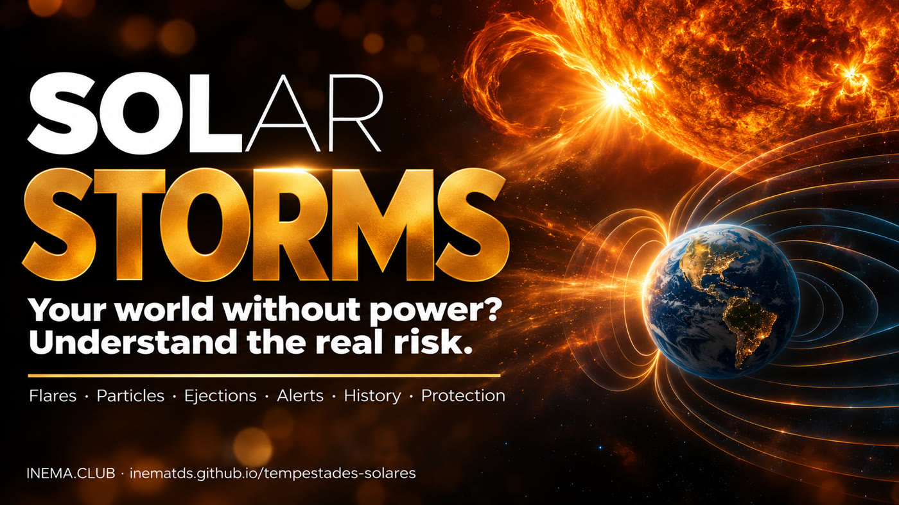
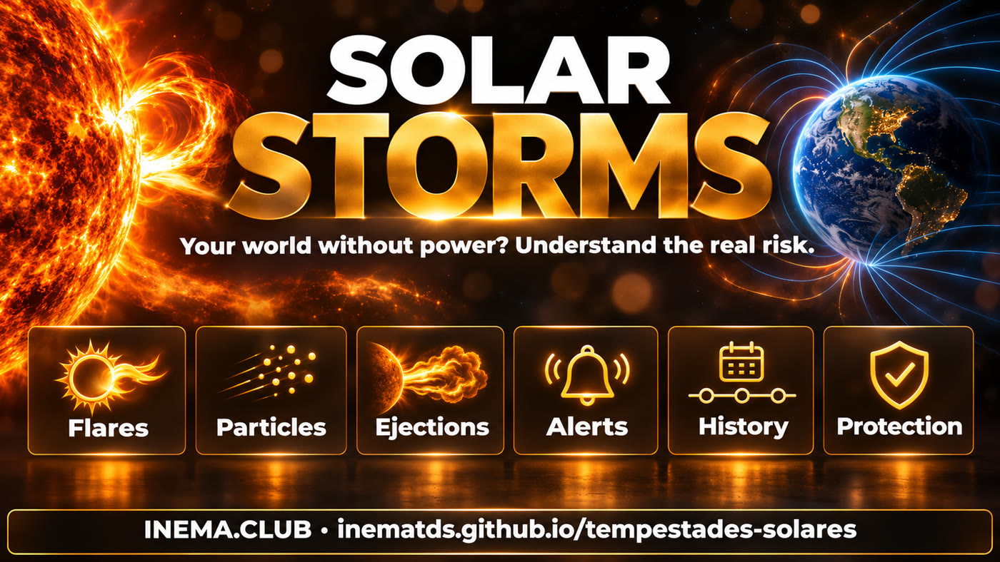

Could a solar explosion melt your equipment and black out the planet?
1 min 42 s · audio and Portuguese captions
The headlines are alarming. Understanding the path from the Sun to your power outlet helps you spot exaggerations and prepare.

Being without power can disrupt water, communications, and care at home. This project brings together independent educational videos by Nei for anyone who wants to understand how solar activity affects these services. You’ll find explanations of the phenomena, guidance on reading alerts from NOAA, the U.S. agency that monitors oceans, the atmosphere, and space weather, as well as history and household preparedness. Just watch or read; the scripts and sources are open. The headlines pose hypothetical questions; they do not predict a global blackout or announce a date.

Each video stands alone. The two shorter ones are also available in vertical format. The videos are in Portuguese; this page is available in three languages.
1 min 42 s · audio and Portuguese captions
2 min 07 s · audio and Portuguese captions
8 min 11 s · audio and Portuguese captions
Different phenomena have different arrival times and impacts. See NOAA’s official explanations.
Rapid release of magnetic energy. X-rays and ultraviolet light alter the ionosphere, an electrically charged region of the upper atmosphere, and can affect radio communications on Earth's sunlit side. Light takes about 8 minutes to reach us.
Accelerated protons can arrive in tens of minutes or less. Radiation risk increases for satellites and astronauts; the atmosphere protects people on the ground.
A cloud of plasma, matter with electrically charged particles, and a magnetic field leave the Sun. If it heads toward Earth, it can disturb the magnetosphere, a region dominated by Earth's magnetic field. The fastest ones arrive in about 15–18 hours; others take days.
Coronal holes are regions of open magnetic field that release fast solar wind. They can also contribute to geomagnetic storms, even without a major flare.
Heating in large transformers is a real mechanism. This does not show that every appliance in a home would melt. A service outage can happen while your equipment remains intact. The outcome depends on the intensity, duration, location, and vulnerability of the grid.
Radio disruptions associated with solar flares.
Solar energetic particle storms.
Disturbances in Earth’s magnetic environment.
The three scales range from 1 to 5. G5 is the extreme geomagnetic category; it is not an automatic prediction of a worldwide blackout. Classes A, B, C, M, and X describe the X-ray peak of flares and are a separate classification.
NOAA scales · Alert types · Flares on SpaceWeatherLive

Telegraph systems were affected, and unusual auroras occurred. There was no modern electric grid to measure the effects on today’s appliances.
A geomagnetic storm caused a blackout: an example of real impact on a modern grid.
The May storm produced auroras and widespread technological effects, without a worldwide blackout.
NOAA, the U.S. agency responsible for oceanic and atmospheric monitoring, indicates about four G5 occurrences per 11-year cycle in its historical table. This does not amount to four Carrington events or four global collapses. There is no universal percentage for a worldwide blackout: the estimate depends on the event, the time period, and the defined impact.
Keep a flashlight, a charged power bank, and written contact information. Agree on a meeting point and a way to contact your family.
Plan for water, food that does not require refrigeration, medicines, and copies of important documents.
Plan ahead for backup power and a place to get support for anyone who relies on medical equipment.
Follow your utility and Civil Defense. Don’t improvise grounding or open the electrical panel because of solar storm news.
Generators must run outdoors and away from doors and windows because of carbon monoxide. A power strip does not guarantee protection against every risk. Infrastructure requires plans from operators and engineers.
You don’t need this section to understand the explanations above.
All videos and captions Scripts and references
The repository contains the illustrations, actual dashboard screenshots, complete scripts, and historical production scripts. The scripts depend on the INEMA environment and are not a portable installer. Large videos are in Releases; the manifest records file size and SHA-256 to verify integrity.
Images: NOAA/SWPC; scientific animations: NASA Goddard, Bailee DesRocher, and Walt Feimer. Covers and scene illustrations generated with image_gen through the Codex subscription. Music: Star walk, szegvari, CC0. Detailed credits and source reuse terms are in the repository; third-party images and media retain their own terms.